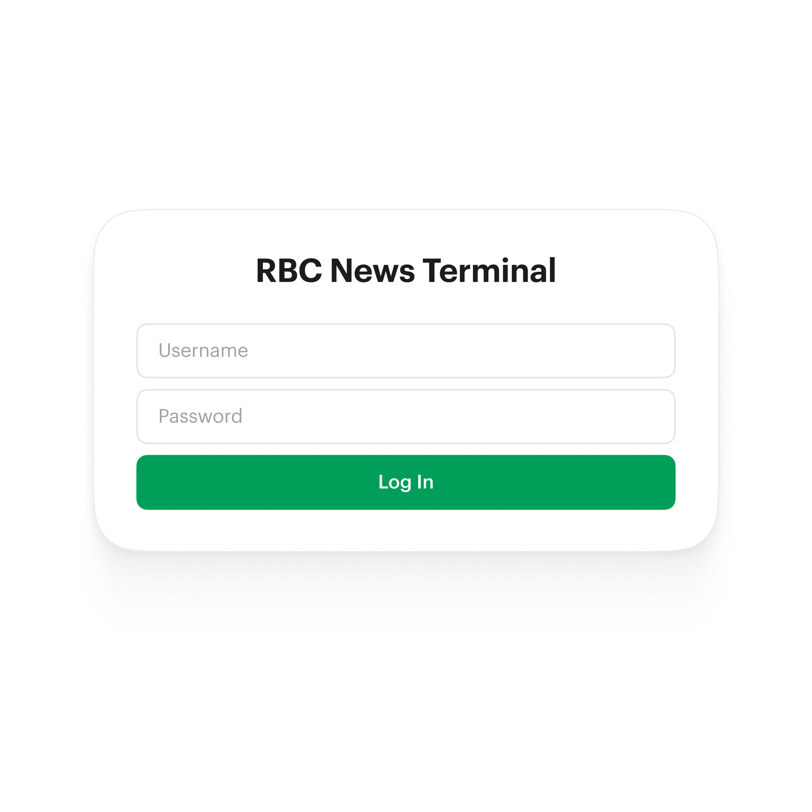
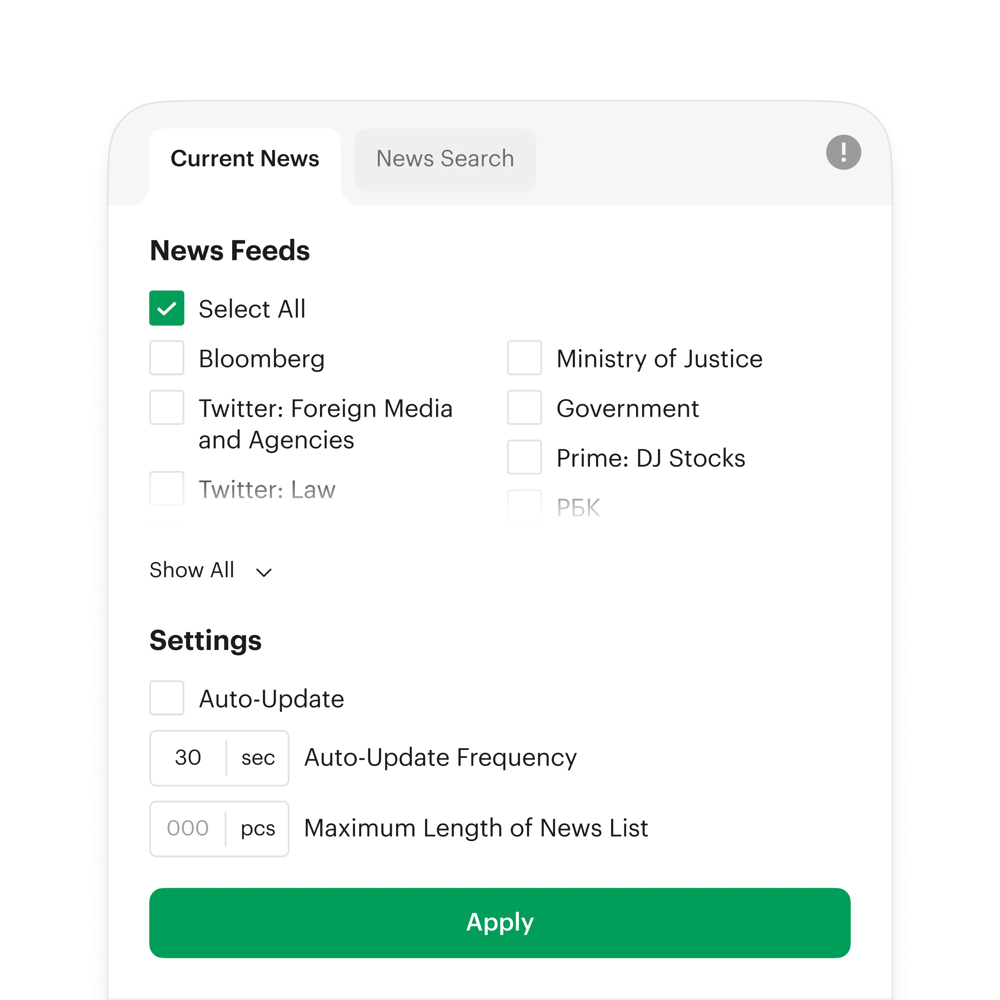
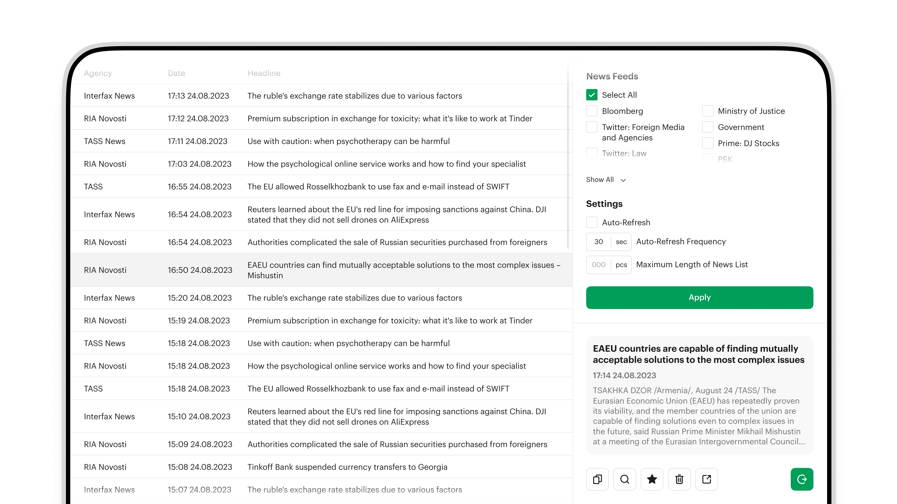
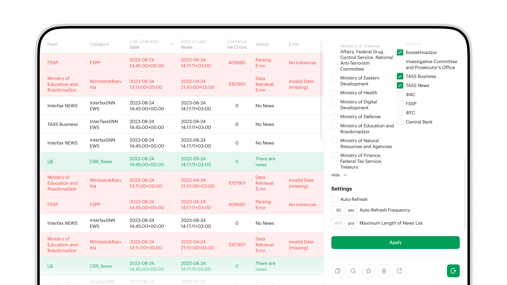
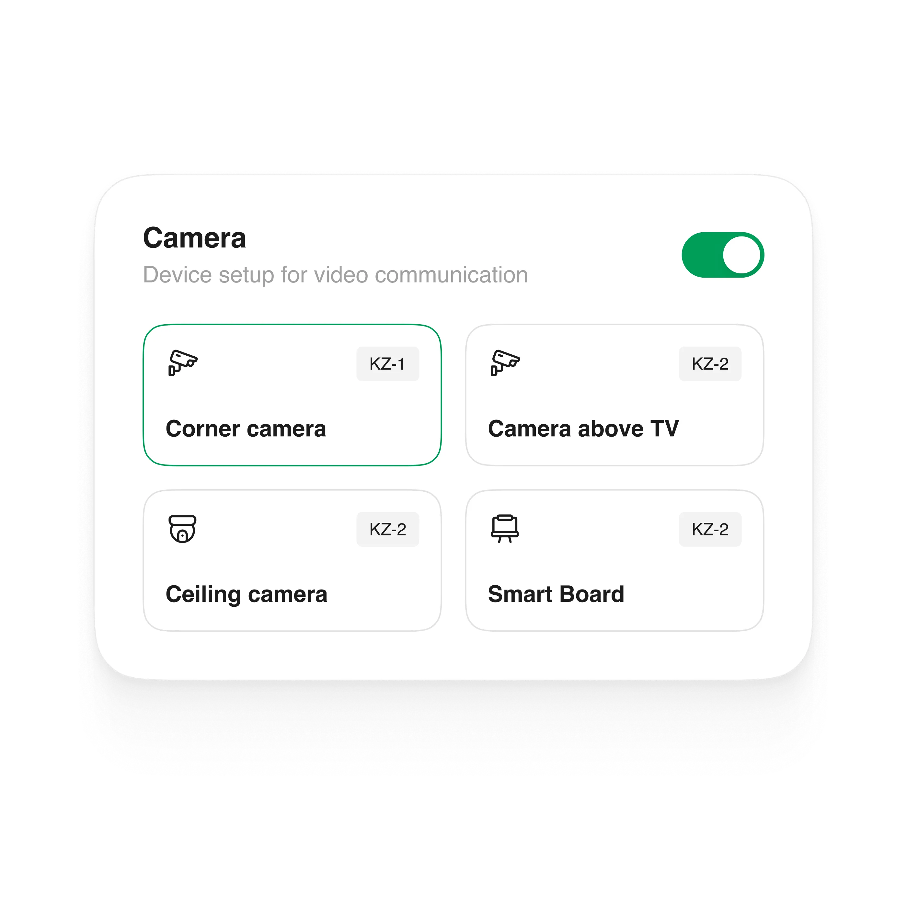
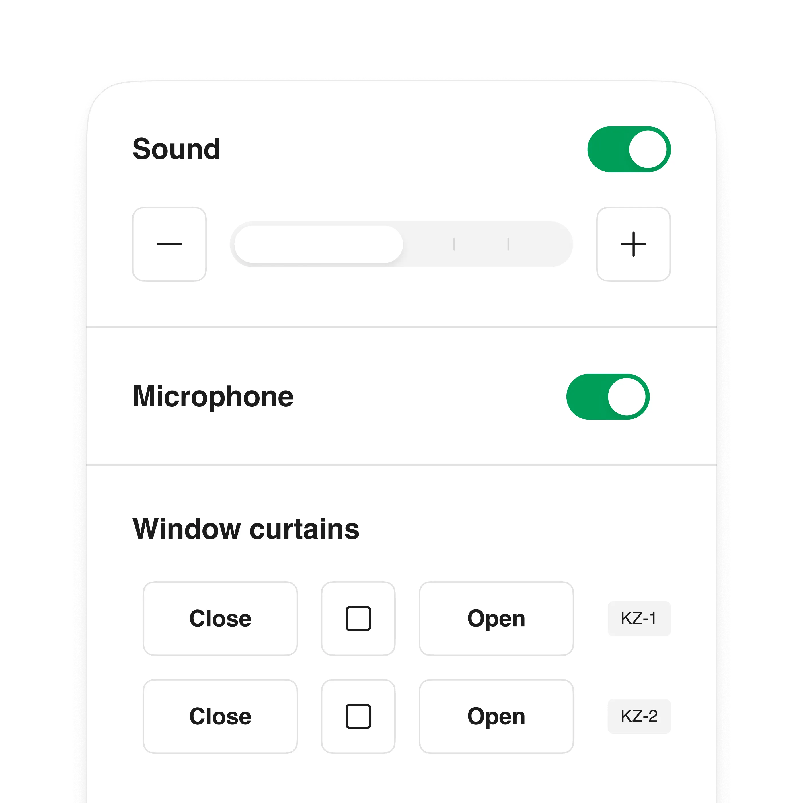
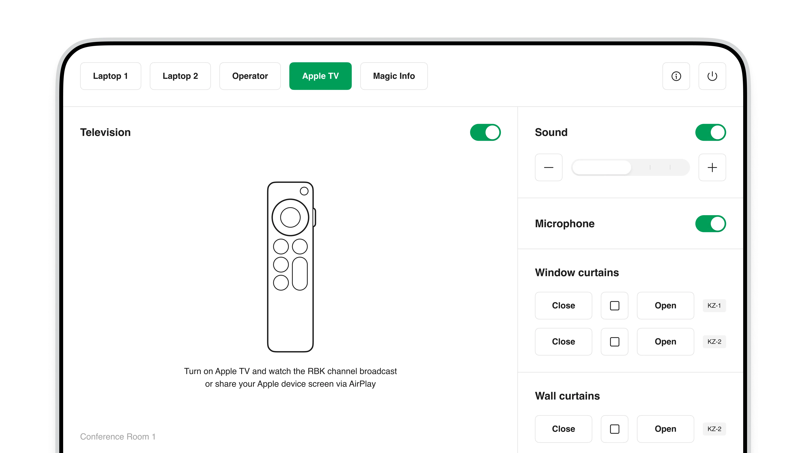
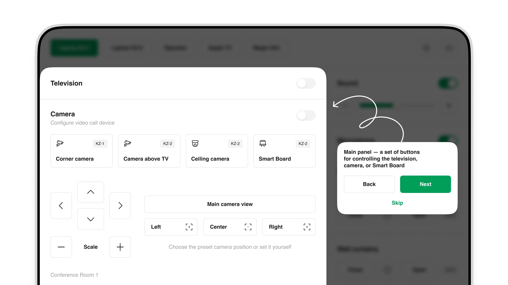
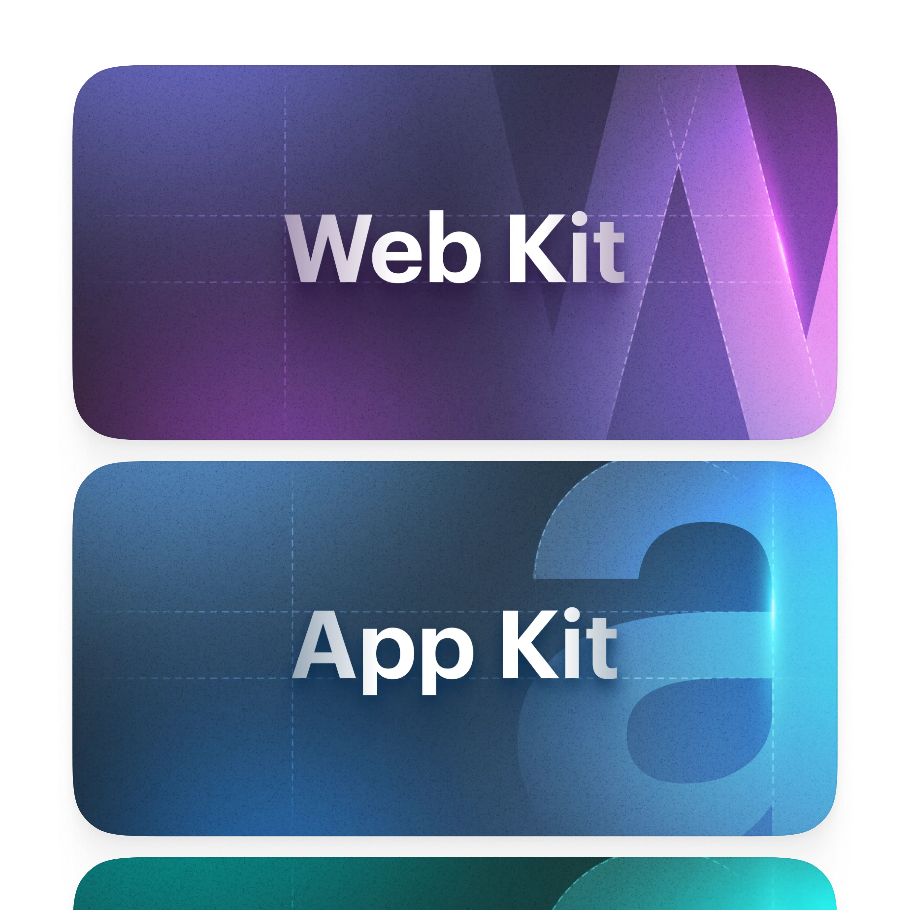
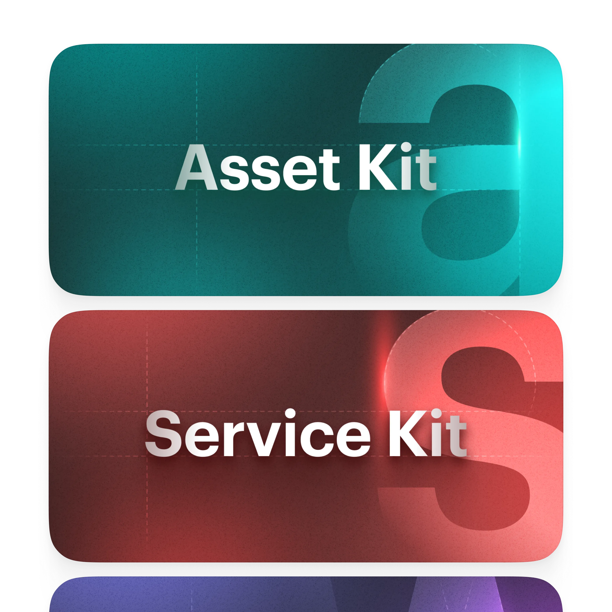

Внутренние проекты
Internal apps, services, and admin tools for employees, plus the Waves design system for the RBC group's products. I launched an app for managing office spaces, a redesign of the main news terminal, and onboarding for the product team. As part of the team, I built the structure of Waves — navigation across Web Kit and App Kit, the Asset Kit and Service Kit, an interface icon library, and a color palette meeting contrast standards

News terminal
RBC processes an enormous flow of news every day, and the newsroom needs a tool to keep it under control. The terminal is the editor's workspace: searching, editing, publishing, and retracting stories in one window. After the redesign, news preparation became 1.7× faster

Source setup
The editor shapes their own feed: connecting the right agencies and services — from Bloomberg to government bodies — and setting how often it refreshes. Only what's relevant stays in the stream, without the noise

The whole flow on one screen
The table view lays out the whole incoming flow compactly: agency, time, headline. Editors get their bearings fast and pull the right stories into work — the path from event to publication dropped by roughly 40%

Source monitoring
Sources fail from time to time, so the terminal tracks their health automatically. Statuses, parsing errors, and data freshness are visible in real time — a failing source surfaces before it affects the live feed

Meeting-room control
The RBC office has dozens of meeting rooms, each with a tablet that controls the room — cameras, screens, sound, climate. I designed a single interface that replaced a scatter of remotes with one clear terminal, rolled out across every room

Sound, mic, blinds
The same tablet handles volume, microphone, and the automatic blinds. Every device in the room is controlled remotely, with no separate remotes

One panel for the room
The main screen brings all controls together: video sources (Apple TV, laptops, Magic Info), the TV, the camera, and the climate. Switching between meeting setups is a single tap instead of a handful of remotes

Guided onboarding
On first launch, the tablet walks you through the interface with short prompts. Even someone new to the system quickly learns to run the room

The Waves design system
Waves is a full-fledged design system, backed by its own codebase. I designed the Web Kit and App Kit components: they cover around 80% of interface needs and cut mockup assembly by about a third

Graphics and icons
I owned the graphics and icon system: the artwork, the file and space guidelines, and the navigation between components. Asset Kit and Service Kit gathered assets and service elements into unified libraries, with a palette tuned to contrast standards
